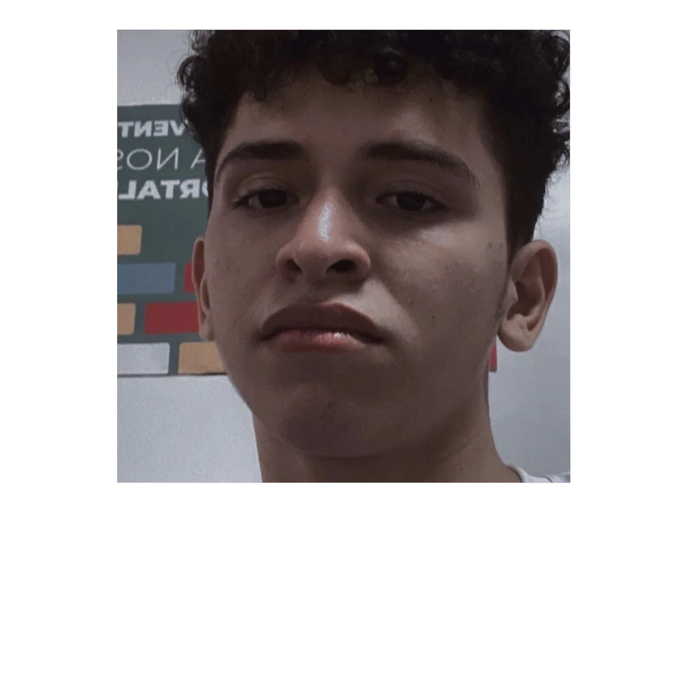
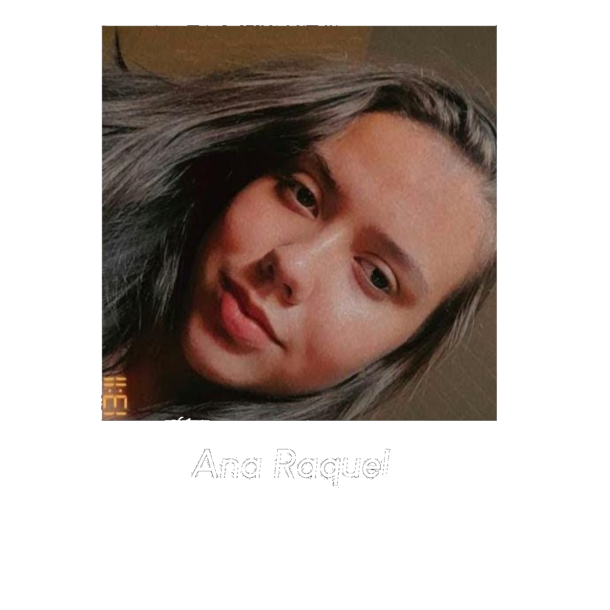
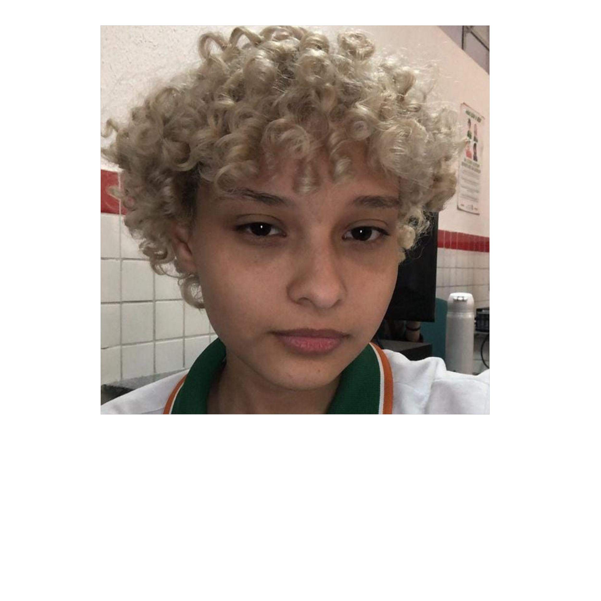
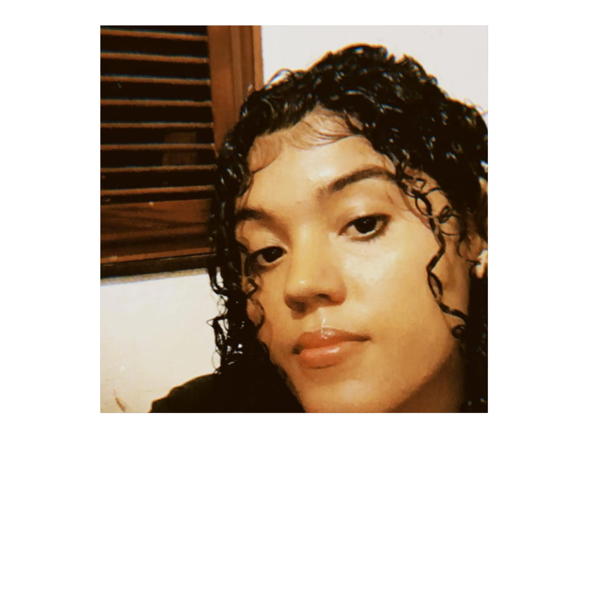
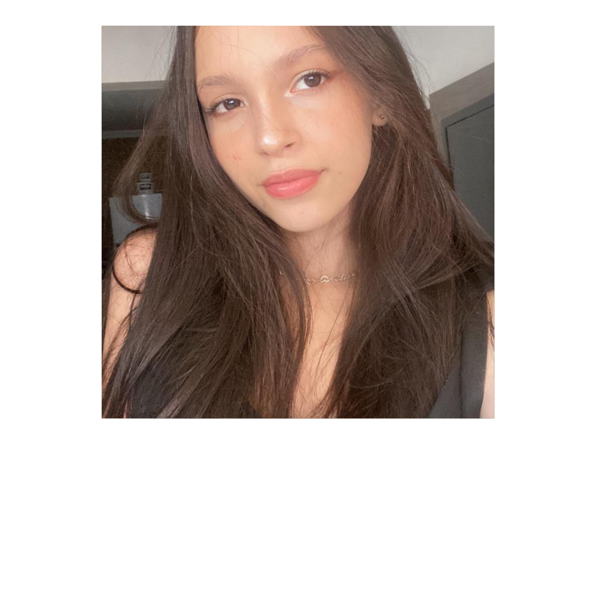
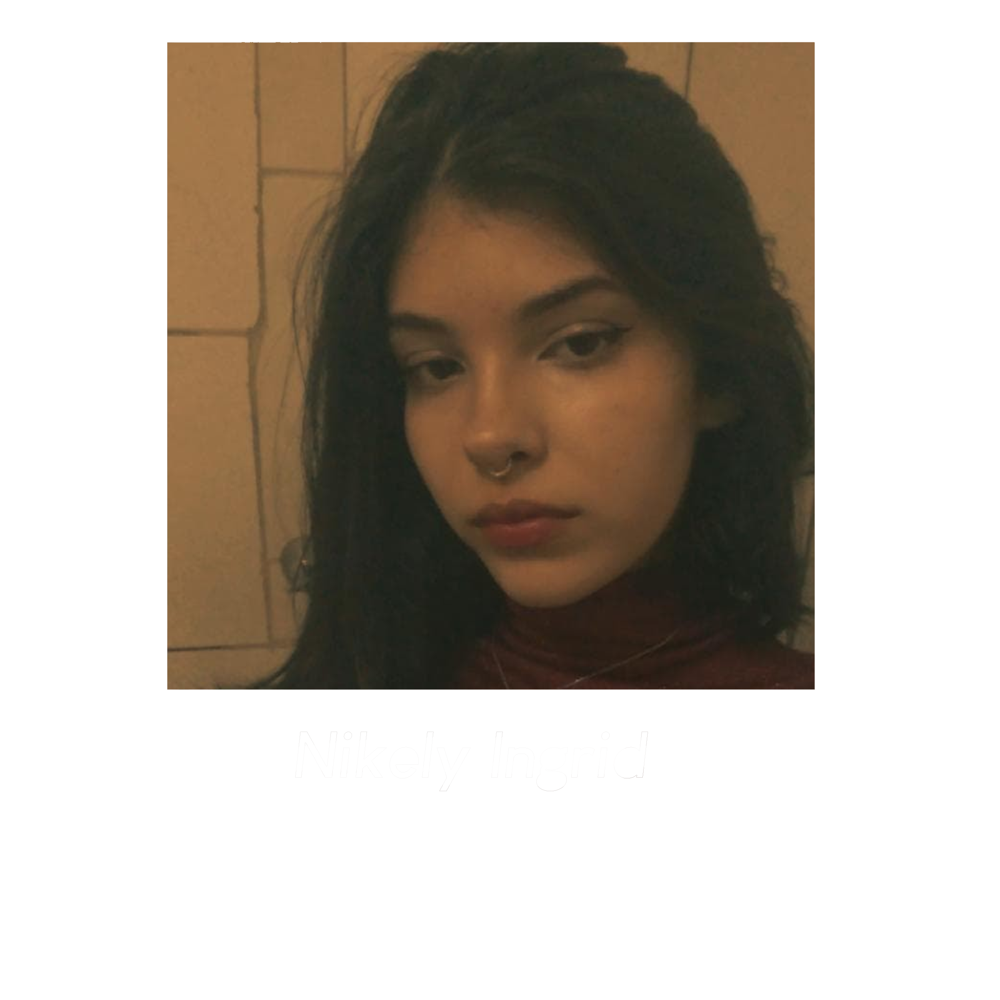
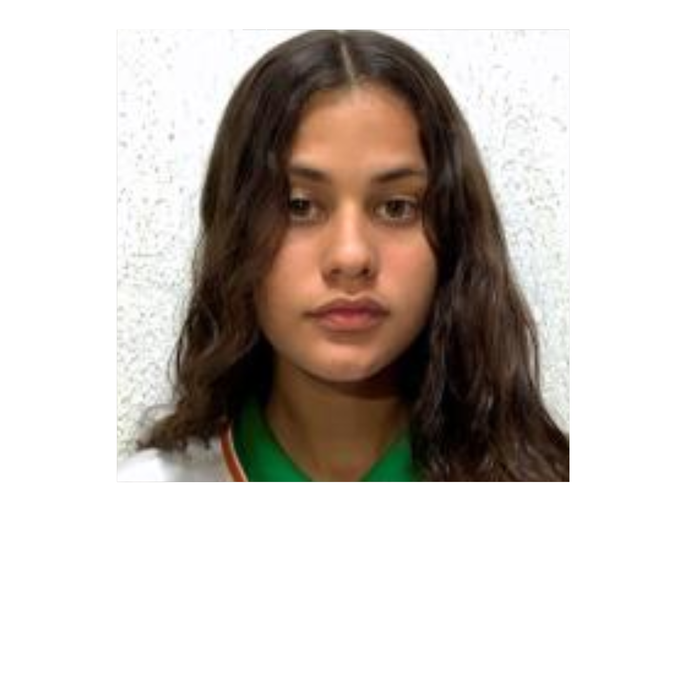

Morda a Borda
Não há limites para uma alimentação saudável.
Início •
Regiões • Sobre Nós •
Referências
Quem nós somos?
Somos uma equipe com o objetivo de trazer alimentos saudáveis vindos
de todo o Brasil.
Nosso Objetivo
Respeitar e valorizar as diferentes expressões da identidade e da
cultura alimentar de nossa população,
reconhecendo e difundindo a riqueza
incomensurável dos alimentos, das preparações,
das combinações e das práticas
alimentares locais e regionais.
A Equipe
Orientadora: Kelly Christine
Área: Ambiente e Saúde
Membros da Equipe:







© Airton Mesquita, Técnico em Nutrição e Dietética, 2023; IV FCAC
(Feira de Ciências, Arte e Cultura); EEEP Leonel de Moura Brizola.